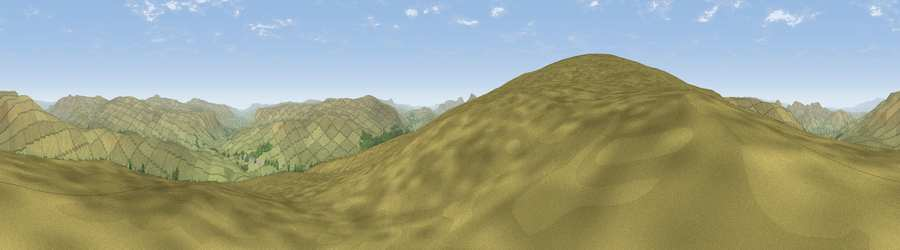

Grisedale Pike
#7931 in England · top 19% of its area beats it · near GarsdaleWhere it is
The exact computed spot (SD 75573 92468). Click the marker for map links.
The view, rendered

A 360° render of this exact spot computed from the terrain model, tree cover and land cover — summer colours, afternoon light, calibrated against photographs of famous viewpoints. Real trees, hedges and buildings will differ in detail.
The panorama
Grey silhouette: terrain skyline in each direction (720 bearings, Earth curvature and refraction included). Dashed green: skyline with trees (+15 m) and buildings (+8 m) as obstacles. Blue strip: how far the ground is visible on each bearing.
Where the view opens
Wedge length = distance to the farthest visible ground on that bearing (vegetation-aware). Rings at 10, 25 and 50 km.
What fills the view
98% grassland · 2% woodland
Angular shares of the visible panorama (visual magnitude), not map area. Landscape diversity 0.05 (0–1 Shannon).
Key numbers
More beautiful places nearby
The staircase of upgrades: each row has a higher view potential than everything closer. Driving times are estimates from straight-line distance, calibrated against real road routing — check an actual route before setting out.
| Place | Direction | Drive | Score |
|---|---|---|---|
| Knoutberry Haw | WSW · 2 km | ~6 min | 74.1 |
| Wild Boar Fell | N · 6 km | ~13 min | 75.0 |
| Viewpoint c9983_7527 | N · 7 km | ~14 min | 76.3 |
| Calders | WNW · 9 km | ~18 min | 79.0 |
| Whernside | S · 11 km | ~21 min | 79.9 |
| Warton Crag | SW · 33 km | ~51 min | 83.2 |
| Viewpoint near Finsthwaite | W · 37 km | ~55 min | 84.7 |
| Viewpoint near Finsthwaite | W · 37 km | ~55 min | 90.3 |
54.32719, -2.37710 · source: osm peak · position refined by local search. Computed location — check access rights before visiting.